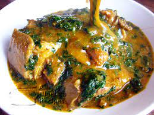

Egusi Soup

Description
A delicious Nigerian dishes you'd ever come across
Ingredients
- Ogbono seeds - ground
- Palm oil
- Vegetables - Spinach, Ugu (Fluted pumpkin leaves), or bitter leaves
- Protein - beef, goat meat, chicken, or whatever meat you prefer
- Fish - smoked fish, stockfish, dried fish
- Crayfish - ground
- Stock cubes - for seasoning
- Pepper - Fresh pepper or dry ground pepper
- Onions - chopped
- Salt - to taste
- Optional - Locust beans, Okro -Sliced
Short Steps
- Boil meat and fish with seasoning cubes and salt until tender.
- Heat palm oil and mix in ground ogbono.
- Add stock and stir continuously to thicken.
- Add meat, fish, crayfish, and pepper to the pot.
- Simmer for 10 minutes, then add vegetables (spinach/ugu).
- Season and serve.